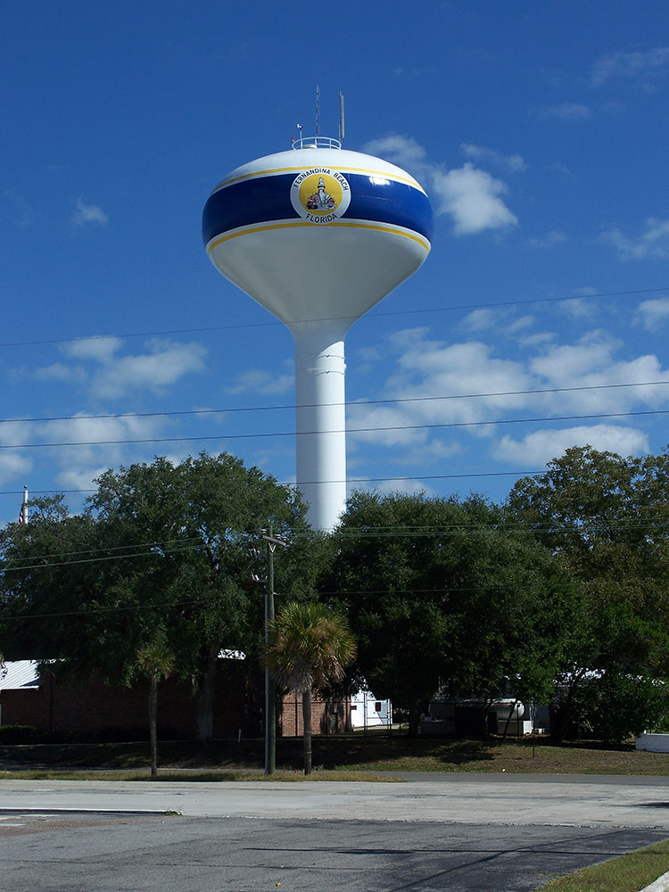
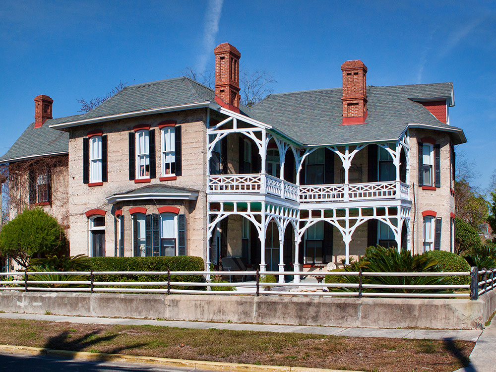

First-magnitude spring park featuring crystal-clear waters, extensive boardwalks, swimming, paddling, and diverse wildlife habitats within a pristine natural setting.
$4 single-occupant vehicle
$2 pedestrians, bicyclists, and extra passengers
How to Get There
From High Springs (10 mi): Take US-27 north from the main hotel area, turn onto County Road 340, continue east to NE 60th Street, and follow signs to the entrance of Ruth B. Kirby Gilchrist Blue Springs State Park.
Overview
Ruth B. Kirby Gilchrist Blue Springs State Park protects one of Florida's most beautiful first-magnitude springs, pumping more than 40 million gallons a day of crystal-clear, 72-degree water from a limestone aquifer into the Santa Fe River. The roughly 407-acre property was a privately run spring park for decades before the state bought it, and it opened as Florida's 175th state park on November 1, 2017; it was renamed in 2019 to honor Ruth B. Kirby, who owned and ran the springs for many years. The spring basin glows in shades of blue and green with exceptional underwater visibility, and boardwalks along the run give great views of the water without ever getting wet. It's a popular spot for swimmers, snorkelers, and paddlers, and the surrounding hardwood forest and wetlands are home to turtles, river otters, and wading birds.
Access
The park is at 7450 NE 60th Street in Gilchrist County, about 10 miles from High Springs in north-central Florida, roughly 25 miles from Gainesville. Nearly all visitors arrive by car from High Springs by way of US-27 and County Road 340, then NE 60th Street to the entrance. There is no public transportation, and the park is rural, so cell service can be limited and services are minimal. Parking and swimming areas fill early on warm weekends and holidays, and the park may close its gate once capacity is reached, so arriving early is wise. Paddlers can reach the Santa Fe River from the spring run, and boardwalks connect the main spring to the other springs on the property.
Seasons
The 72-degree spring water stays the same all year, which makes it feel refreshingly cool in the heat of summer and chilly on winter days. Late spring through early fall is the busiest season for swimming, snorkeling and paddling, and summer brings heat, humidity, afternoon thunderstorms and insects on the trails. Fall and winter are quieter and more comfortable for hiking and wildlife viewing, though cool air can make swimming less appealing. Heavy rain can raise the Santa Fe River and tint the spring water, which reduces visibility, and hurricane season runs from June through November. The park is open daily year-round.
Things to Do
Swim and Snorkel the Spring
The spring's exceptional clarity and steady 72-degree water make it one of Florida's best swimming and snorkeling spots, with underwater limestone formations and fish visible from the surface.
Paddle the Spring Run and Santa Fe River
Kayak, canoe, or paddleboard through the clear spring run out to the Santa Fe River, spotting turtles, fish, and birds along the way.
Watch for Wildlife
The park's hardwood forests, wetlands, and spring-fed waterways are home to turtles, river otters, wading birds, and a variety of native Florida wildlife.
Top Trails
Gilchrist Blue Springs Nature Trail
Length: ~0.5 miles round trip
Difficulty: Easy
A short walk through upland forest, suitable for all ages.
Spring Run Walking Path
Length: ~0.75 miles round trip
Difficulty: Easy
Follows the spring run with good views of the crystal-clear water flowing toward the Santa Fe River.
Santa Fe River Access Trail
Length: ~1 mile round trip
Difficulty: Easy
Connects to the Santa Fe River corridor and its paddling access points.
Visitor Centers
The park does not have a dedicated visitor center. Rangers and staff at the entrance station provide maps and information, and a concession stand sells food, drinks and paddling rentals. Interpretive signs along the boardwalks explain the springs and their ecology. For current hours, fees and programs, check the Florida State Parks website or call the park before your visit.
Camping and Lodging
Camping is among the activities offered in the park, and the park website has current information on campsites and reservations. Hotels and motels are in High Springs, about 10 miles away, with more options in Alachua and the larger city of Gainesville, about 25 miles away. Nearby state parks also offer camping, including O'Leno State Park near High Springs and Ichetucknee Springs State Park, both within about an hour. Weekends in summer are the busiest, so reserve ahead.
This article uses material from the Wikipedia article "Gilchrist Blue Springs State Park", released under the Creative Commons Attribution-ShareAlike License 3.0, and from Florida State Parks' official Gilchrist Blue Springs State Park visitor information.


